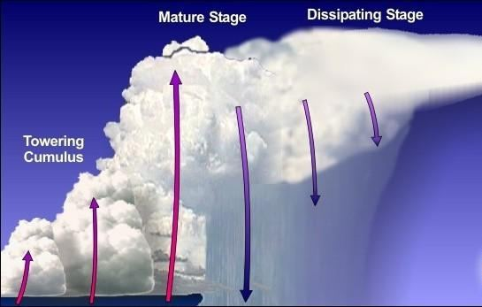
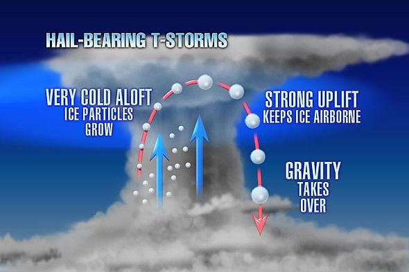

FIGURE 24.10: Cumulonimbus Cloud

চিত্র 24_10 / Figure 24_10
চিত্র 24.10: কিউমুলোনিম্বাস ক্লাউড
চিত্র 24_10 / Figure 24_10
Winds flow in different directions at different altitudes. This can be observed by releasing a weather balloon—its direction changes as it rises. At higher altitudes, the airflow becomes more violent. However, to form and drive a Cumulonimbus Cloud, the winds act with a specific purpose.
বাতাস বিভিন্ন উচ্চতায় বিভিন্ন দিকে প্রবাহিত হয়। এটি একটি আবহাওয়া বেলুন ছেড়ে দিয়ে লক্ষ্য করা যেতে পারে - এটি উঠার সাথে সাথে এর দিক পরিবর্তন হয়। উচ্চ উচ্চতায়, বায়ুপ্রবাহ আরও হিংস্র হয়ে ওঠে। যাইহোক, একটি Cumulonimbus ক্লাউড গঠন এবং চালনা করার জন্য, বায়ু একটি নির্দিষ্ট উদ্দেশ্য নিয়ে কাজ করে।
―Behold!…in the change of the winds and the clouds which they trail like their slaves between the sky and the earth, indeed, are signs for a people that are wise.‖ [Al Quran 2:164] The mountain-like formation of the cloud is not visible from the ground, but it becomes apparent to birds flying at high altitudes. The above verses refer to birds that fly with wings spread wide: ―See you not that it is God Whose praises all beings in the Skies and on Land do celebrate, and the birds with wings outspread?‖ These are high flying birds, such as vulture, crane, goose, etc., which fly with wing outspread while migrating to a distant land. The birds are spotted over 29000 feet. They can see the mountain formation of the clouds. If one has crossed the equatorial belt of Africa in an aircraft flying above 30,000 feet, one may have witnessed these mountain-like cloud formations. While these clouds form in other regions as well, they are particularly prominent in this zone, where they are closely located and numerous. Aircraft often pass near these mountain masses—sometimes flying through their peaks, and other times navigating through the gaps between them.
“দেখুন!...বায়ু ও মেঘের পরিবর্তনের মধ্যে যা তারা আকাশ ও পৃথিবীর মধ্যে তাদের দাসদের মতো পথ করে চলে, প্রকৃতপক্ষে, জ্ঞানী লোকদের জন্য নিদর্শন।” [আল কুরআন 2:164] মেঘের পাহাড়ের মতো গঠন মাটি থেকে দেখা যায় না, তবে এটি পাখিদের উচ্চতায় স্পষ্ট হয়। উপরোক্ত আয়াতগুলো এমন পাখির কথা উল্লেখ করে যারা ডানা মেলে উড়ে বেড়ায়: "তুমি কি দেখ না যে, সেই ঈশ্বর যার প্রশংসা আকাশে ও ভূমিতে থাকা সকল প্রাণীই উদযাপন করে, আর ডানা বিছিয়ে থাকা পাখিরা উদযাপন করে? - এগুলি হল উঁচু উড়ন্ত পাখি, যেমন শকুন, সারস, হংস ইত্যাদি, যারা মাটির সাথে উড়ে উড়ে বেড়ায়। 29000 ফুট উপরে পাখি দেখা যায়. তারা মেঘের পর্বত গঠন দেখতে পায়। যদি কেউ 30,000 ফুট উপরে উড়ন্ত একটি বিমানে আফ্রিকার নিরক্ষীয় অঞ্চল অতিক্রম করে থাকে তবে কেউ এই পর্বত-সদৃশ মেঘ গঠনের সাক্ষী হতে পারে। যদিও এই মেঘগুলি অন্যান্য অঞ্চলে তৈরি হয়, তারা এই অঞ্চলে বিশেষভাবে বিশিষ্ট, যেখানে তারা কাছাকাছি অবস্থিত এবং অসংখ্য। উড়োজাহাজ প্রায়শই এই পর্বত জনতার কাছাকাছি যায়-কখনও কখনও তাদের চূড়া দিয়ে উড়ে যায়, এবং অন্য সময় তাদের মধ্যবর্তী ফাঁক দিয়ে নেভিগেট করে।
FIGURE 24.11: Cloud view from the Sky 2. The Cumulonimbus Clouds are moving Mountains of Clouds
চিত্র 24_11 / Figure 24_11
চিত্র 24.11: আকাশ 2 থেকে মেঘের দৃশ্য। কুমুলোনিম্বাস ক্লাউডগুলি মেঘের পর্বতমালাকে সরিয়ে দিচ্ছে
চিত্র 24_11 / Figure 24_11
The Cumulonimbus clouds are often referred to as 'running rain.' They bring strong winds and pass over an area within an hour or so, as the verses state: ―…And He sends down from the sky mountain masses…‖
Cumulonimbus মেঘকে প্রায়ই 'চলমান বৃষ্টি' বলা হয়। তারা প্রবল বাতাস বয়ে আনে এবং এক ঘন্টার মধ্যে একটি এলাকা অতিক্রম করে, যেমন আয়াতে বলা হয়েছে: "...এবং তিনি আকাশ থেকে পর্বত জনগণকে বর্ষণ করেন..."
3. The Cumulonimbus Clouds produce Hail / Hailstones
3. কিউমুলোনিম্বাস ক্লাউড শিলাবৃষ্টি তৈরি করে
Hailstones are produced in these clouds: ―…And He sends down from the sky mountain masses wherein is hail…‖. The hailstones begin as water droplets in a Cumulonimbus Cloud. If there is an updraft as strong as 110 miles per hour, the droplets rise to a level where the temperature drops below freezing, forming hailstones.
এই মেঘের মধ্যে শিলাবৃষ্টি হয়: "...এবং তিনি আকাশ থেকে বর্ষণ করেন পর্বতমালা যার মধ্যে শিলাবৃষ্টি রয়েছে..." কিউমুলোনিম্বাস ক্লাউডে জলের ফোঁটা হিসাবে শিলাবৃষ্টি শুরু হয়। যদি প্রতি ঘন্টায় 110 মাইলের মতো শক্তিশালী আপড্রাফ্ট হয়, তাহলে ফোঁটাগুলি এমন একটি স্তরে বৃদ্ধি পায় যেখানে তাপমাত্রা হিমাঙ্কের নীচে নেমে যায়, শিলাবৃষ্টি তৈরি করে।
FIGURE 24.12: Formation of Hailstone The hailstones are held in the upper zone of the cloud as long as the updraft remains strong. Often, they fall to certain heights, gather more water, and are then lifted up again by the updraft. With each bounce, they grow larger. A hailstone can reach up to six inches in diameter and cause severe damage. The heaviest hailstone on record, weighing 1.02 kg, fell in the Gopalganj district of Bangladesh in 1986: ―…He strikes there-with whom He pleases, and He turns it away from whom He pleases.‖

চিত্র 24_12 / Figure 24_12
চিত্র 24.12: শিলাবৃষ্টির গঠন যতক্ষণ পর্যন্ত আপড্রাফ্ট শক্তিশালী থাকে ততক্ষণ পর্যন্ত শিলাবৃষ্টিগুলি মেঘের উপরের অঞ্চলে রাখা হয়। প্রায়শই, তারা নির্দিষ্ট উচ্চতায় পড়ে, আরও জল সংগ্রহ করে এবং তারপরে আপড্রাফ্ট দ্বারা আবার উপরে তোলা হয়। প্রতিটি বাউন্সের সাথে, তারা বড় হয়। একটি শিলাবৃষ্টি ছয় ইঞ্চি ব্যাস পর্যন্ত পৌঁছাতে পারে এবং মারাত্মক ক্ষতির কারণ হতে পারে। রেকর্ডে সবচেয়ে ভারি শিলাপাথর, যার ওজন ছিল 1.02 কেজি, 1986 সালে বাংলাদেশের গোপালগঞ্জ জেলায় পড়েছিল: "...তিনি যাকে খুশি সেখানে আঘাত করেন, এবং তিনি যাকে খুশি তা ফিরিয়ে দেন।"
চিত্র 24_12 / Figure 24_12
4. The Cumulonimbus Clouds produce Lightning and Thunders
4. কুমুলোনিম্বাস ক্লাউড বজ্রপাত এবং বজ্রপাত করে
The Cumulonimbus clouds are associated with lightning and thunder, as the verses state: ―…the vivid flash of His lightning well-nigh blinds the sight.‖
কুমুলোনিম্বাস মেঘগুলি বজ্রপাত এবং বজ্রপাতের সাথে যুক্ত, যেমন আয়াতে বলা হয়েছে: ''...তাঁর বিদ্যুতের উজ্জ্বল ঝলকানি দৃষ্টিকে অন্ধ করে দেয়।''
Therefore, all the characteristics of Cumulonimbus clouds are described in these verses: They are like mountains. They are moving mountains of cloud They produce hailstones. They produce lightning and thunders
অতএব, কিউমুলোনিম্বাস মেঘের সমস্ত বৈশিষ্ট্য এই আয়াতগুলিতে বর্ণনা করা হয়েছে: তারা পাহাড়ের মতো। তারা মেঘের পাহাড় চলমান তারা শিলাবৃষ্টি তৈরি করে। তারা বজ্রপাত ও বজ্রপাত করে
It is God Who alternates the Night and the Day; verily in these things is an instructive example for those who have vision!
তিনিই ঈশ্বর যিনি রাত ও দিনের পরিবর্তন করেন; নিঃসন্দেহে দৃষ্টিশক্তিসম্পন্নদের জন্য এগুলোর মধ্যে একটি শিক্ষণীয় উদাহরণ রয়েছে!
Remarks:
মন্তব্য:
The Earth is spinning rapidly: a man standing on the equator moves at over 1,670 km per hour. It revolves around the Sun at a speed of 30 km per second. In these fast and complex motions, we witness the perfection of day and night, and the system such as a Cumulonimbus Cloud can form and move intact. These are His deeds.
পৃথিবী দ্রুত ঘুরছে: নিরক্ষরেখায় দাঁড়িয়ে থাকা একজন মানুষ ঘণ্টায় 1,670 কিমি বেগে চলে। এটি প্রতি সেকেন্ডে 30 কিমি বেগে সূর্যের চারদিকে ঘোরে। এই দ্রুত এবং জটিল গতির মধ্যে, আমরা দিন এবং রাতের পরিপূর্ণতা প্রত্যক্ষ করি এবং একটি কিউমুলোনিম্বাস ক্লাউডের মতো সিস্টেমটি অক্ষতভাবে তৈরি এবং চলতে পারে। এগুলো তাঁরই কাজ।
Section-12 of Chapter 24 [Verse 45-46]: Biological Evolution (Main Discussion)
অধ্যায় 24 এর সেকশন-12 [শ্লোক 45-46]: জৈবিক বিবর্তন (প্রধান আলোচনা)
And Allah has created every animal from water; of them there are some that creep on their bellies, some that walk on two legs, and some that walk on four. Allah creates what He wills; for verily Allah has power over all things.
আর আল্লাহ প্রত্যেক প্রাণীকে পানি থেকে সৃষ্টি করেছেন; তাদের মধ্যে কিছু আছে যারা তাদের পেটের উপর ভর করে, কেউ দুই পায়ে হাঁটে এবং কেউ চার পায়ে হাঁটে। আল্লাহ যা ইচ্ছা সৃষ্টি করেন; কারণ আল্লাহ সব কিছুর উপর ক্ষমতাবান।
Remarks:
মন্তব্য:
In the above verses, the creation of animals is described in a sequence that supports the Theory of Biological Evolution. It means that Allah created Adam and Eve Himself, while other animals were created through Biological Evolution, guided by Him. In this section, I will discuss Biological Evolution and, in light of the Quran, demonstrate that humans are a standalone creature. The discussion will progress in the following sequence: 1. Modern Theory of Biological Evolution 2. Evolution of Animals 3. Evolution and the Creation of Human 4. Creation of Adam 5. Missing Link 6. Unique Adam 7. Summary 8. Conclusion A progression in the living organisms shows that they evolved through eons of time from lower to higher form. Ibne Khaldun (1334–1406 CE) presented the idea of Biological Evolution in his book, Kitab al Ibar. The theory became known in Europe as ―Mohammedan Theory of Biological Evolution‖.
উপরের আয়াতগুলিতে, প্রাণীদের সৃষ্টি এমন একটি ক্রমানুসারে বর্ণিত হয়েছে যা জৈবিক বিবর্তন তত্ত্বকে সমর্থন করে। এর অর্থ হল আল্লাহ আদম ও ইভকে নিজেই সৃষ্টি করেছেন, যখন অন্যান্য প্রাণী জৈবিক বিবর্তনের মাধ্যমে সৃষ্টি হয়েছে, তাঁর দ্বারা পরিচালিত। এই বিভাগে, আমি জৈবিক বিবর্তন নিয়ে আলোচনা করব এবং কুরআনের আলোকে দেখাব যে মানুষ একটি স্বতন্ত্র প্রাণী। আলোচনাটি নিম্নলিখিত ক্রমানুসারে অগ্রসর হবে: 1. জৈবিক বিবর্তনের আধুনিক তত্ত্ব 2. প্রাণীর বিবর্তন 3. বিবর্তন এবং মানুষের সৃষ্টি 4. আদমের সৃষ্টি 5. অনুপস্থিত লিঙ্ক 6. অনন্য আদম 7. সংক্ষিপ্তসার 8. উপসংহার জীবন্ত প্রাণীর একটি অগ্রগতি দেখায় যে তারা উচ্চতর সময় থেকে বিবর্তিত হয়েছে। ইবনে খালদুন (1334-1406 CE) তার বই কিতাব আল ইবারে জৈবিক বিবর্তনের ধারণা উপস্থাপন করেছেন। তত্ত্বটি ইউরোপে "মোহামেডান থিওরি অফ জৈবিক বিবর্তন" নামে পরিচিতি লাভ করে।
1. Modern Theory of Biological Evolution
1. জৈবিক বিবর্তনের আধুনিক তত্ত্ব
In the 19th century, Charles Darwin, the Father of Modern Theory of Biological Evolution, argued that evolution occurs by means of natural selection, the process in nature by which only the organisms best adapted to their environment tend to survive and transmit their genetic characters in increasing numbers to succeeding generations while those less adapted tend to be eliminated (Survival of the fittest, as expressed in the words of Spencer). Darwin‘s books ―On the Origin of Species by Means of Natural Selection‖ and ―The Descent of Man and Selection in Relation to Sex‖ were published in 1857 and 1871 respectively. Nobody has seen the evolution of a new species. However, the scientists find fossil evidences that show that the changes occurred in the nature in certain periods of time. It is obvious that cats evolved into lions. Modern scientific disciplines have moved forward the theory. It suggests that all living creatures have descended from bacteria like microorganisms that originated in the ocean floor more than three and a half billion years ago. The primitive creatures made significant contributions to making the Earth suitable for present-day animals. They produced the soft-soil crust and likely contributed to the presence of free oxygen in the atmosphere. Animals evolved in the water five to six hundred million years ago. Subsequently, fish, amphibians, reptiles, birds, and mammals evolved. The progression went on as under: The first living creature appeared about 3 to 4 billion year ago. Life progressed in water. The animal appeared as marine species about 542 million years ago. The land plants appeared about 450 million years ago. Continents began drifting about 225 million years ago. The high mountain ranges formed by 75 million years ago. It spread the clouds into the continents and produced the rivers. The rain raised the ground water. The big flowering trees appeared about 73 million years ago. Adam and Even were descended about ten to twelve thousand year ago (as envisaged from the cave paintings).
19 শতকে, জৈবিক বিবর্তনের আধুনিক তত্ত্বের জনক চার্লস ডারউইন যুক্তি দিয়েছিলেন যে প্রাকৃতিক নির্বাচনের মাধ্যমে বিবর্তন ঘটে, প্রকৃতিতে এমন একটি প্রক্রিয়া যার মাধ্যমে শুধুমাত্র জীবের পরিবেশের সাথে সবচেয়ে ভালোভাবে খাপ খাওয়ানো হয় এবং তাদের জিনগত চরিত্রগুলি ক্রমবর্ধমান সংখ্যায় পরবর্তী প্রজন্মের কাছে প্রেরণ করার প্রবণতা রাখে যখন সেগুলি কম অভিযোজিত শব্দগুলিকে অপসারণ করার প্রবণতা প্রকাশ করে। স্পেন্সার)। ডারউইনের বই "অন দ্য অরিজিন অফ স্পিসিজ বাই মিনস অফ ন্যাচারাল সিলেকশন" এবং "দ্য ডিসেন্ট অফ ম্যান অ্যান্ড সিলেকশন ইন রিলেশন টু সেক্স" যথাক্রমে 1857 এবং 1871 সালে প্রকাশিত হয়েছিল। নতুন প্রজাতির বিবর্তন কেউ দেখেনি। যাইহোক, বিজ্ঞানীরা জীবাশ্মের প্রমাণ খুঁজে পেয়েছেন যা দেখায় যে নির্দিষ্ট সময়ের মধ্যে প্রকৃতিতে পরিবর্তন ঘটেছে। এটা স্পষ্ট যে বিড়াল সিংহে বিবর্তিত হয়েছে। আধুনিক বৈজ্ঞানিক শাখা তত্ত্বকে এগিয়ে নিয়ে গেছে। এটি পরামর্শ দেয় যে সমস্ত জীবন্ত প্রাণীরই অণুজীবের মতো ব্যাকটেরিয়া থেকে এসেছে যা সমুদ্রের তলদেশে সাড়ে তিন বিলিয়ন বছর আগে উদ্ভূত হয়েছিল। আদিম প্রাণীরা পৃথিবীকে বর্তমান সময়ের প্রাণীদের উপযোগী করে তুলতে গুরুত্বপূর্ণ অবদান রেখেছিল। তারা নরম-মাটির ভূত্বক তৈরি করেছিল এবং সম্ভবত বায়ুমণ্ডলে বিনামূল্যে অক্সিজেনের উপস্থিতিতে অবদান রেখেছিল। পাঁচ থেকে 600 মিলিয়ন বছর আগে প্রাণীরা জলে বিবর্তিত হয়েছিল। পরবর্তীকালে, মাছ, উভচর, সরীসৃপ, পাখি এবং স্তন্যপায়ী প্রাণীর বিবর্তন ঘটে। অগ্রগতি নিম্নরূপ: প্রায় 3 থেকে 4 বিলিয়ন বছর আগে প্রথম জীবন্ত প্রাণীর আবির্ভাব ঘটে। জীবন জলে এগিয়েছে। প্রাণীটি প্রায় 542 মিলিয়ন বছর আগে সামুদ্রিক প্রজাতি হিসাবে আবির্ভূত হয়েছিল। প্রায় 450 মিলিয়ন বছর আগে ভূমি গাছপালা আবির্ভূত হয়েছিল। মহাদেশগুলি প্রায় 225 মিলিয়ন বছর আগে প্রবাহিত হতে শুরু করে। 75 মিলিয়ন বছর আগে গঠিত উচ্চ পর্বতশ্রেণী। এটি মহাদেশগুলিতে মেঘ ছড়িয়ে দেয় এবং নদী তৈরি করে। বৃষ্টি মাটির পানি বাড়িয়ে দিয়েছে। বড় ফুলের গাছ প্রায় 73 মিলিয়ন বছর আগে আবির্ভূত হয়েছিল। আদম এবং ইভেন প্রায় দশ থেকে বারো হাজার বছর আগে অবতীর্ণ হয়েছিল (গুহাচিত্র থেকে কল্পনা করা হয়েছে)।
2. Evolution of Animals
2. প্রাণীদের বিবর্তন
The movement is primary character of an animal: ―All animals are motile, meaning they can move spontaneously and independently at some points of their lives‖– Wikipedia, the Free Encyclopedia The verse under discussion is describing the progression on the basis of locomotion: marine creatures, creeping creatures, two legged creatures, and four legged creatures. So, the verse is only describing the progression of animals. I have discussed the verse by dividing it into four parts, as under: Part-1: "And Allah has created every animal from water…‖ Part-2: ―…of them there are some that creep on their bellies…‖ Part-3: ―…some that walk on two legs…‖ Part-4: ―…and some that walk on four. Allah creates what He wills; for verily Allah has power over all things" The Figure 24.13 shows the Biological Evolution of animals at a glance. It is drawn from The New Encyclopedia Britannica.
নড়াচড়া একটি প্রাণীর প্রাথমিক চরিত্র: “সমস্ত প্রাণীই গতিশীল, যার অর্থ তারা তাদের জীবনের কিছু সময়ে স্বতঃস্ফূর্তভাবে এবং স্বাধীনভাবে চলতে পারে”- উইকিপিডিয়া, মুক্ত বিশ্বকোষ আলোচনার অধীন শ্লোকটি গতির ভিত্তিতে অগ্রগতি বর্ণনা করছে: সামুদ্রিক প্রাণী, লতানো প্রাণী, চার পায়ের প্রাণী, দুই পায়ের প্রাণী। সুতরাং, আয়াতটি শুধুমাত্র প্রাণীদের অগ্রগতির বর্ণনা দিচ্ছে। আমি আয়াতটিকে চার ভাগে বিভক্ত করে আলোচনা করেছি, যেমনঃ পার্ট-১: "আর আল্লাহ প্রত্যেক প্রাণীকে সৃষ্টি করেছেন পানি থেকে..." পার্ট-২: "...তাদের মধ্যে এমন কিছু আছে যারা তাদের পেটে হামাগুড়ি দেয়..." পার্ট-3: ―…কেউ কেউ দুই পায়ে হাঁটে...‖ পার্ট-4: ―আল্লাহ যা সৃষ্টি করবেন তার জন্য চারটি শক্তি আছে; সব কিছুর উপরে" চিত্র 24.13 এক নজরে প্রাণীদের জৈবিক বিবর্তন দেখায়। এটি দ্য নিউ এনসাইক্লোপিডিয়া ব্রিটানিকা থেকে নেওয়া হয়েছে।
FIGURE 24.13: Biological Evolution

চিত্র 24_13 / Figure 24_13
চিত্র 24.13: জৈবিক বিবর্তন
চিত্র 24_13 / Figure 24_13
I have underlined waterborne creatures, reptiles, two legged creatures, and four legged creatures to show the Evolution and relate it to the verse under discussion. I have erased human from the figure, as the link is missing. The missing link is discussed subsequently.
বিবর্তন দেখানোর জন্য আমি জলবাহিত প্রাণী, সরীসৃপ, দুই পায়ের প্রাণী এবং চার পায়ের প্রাণীকে আন্ডারলাইন করেছি এবং আলোচনার অধীন শ্লোকের সাথে সম্পর্কিত করেছি। আমি চিত্র থেকে মানুষ মুছে ফেলেছি, কারণ লিঙ্কটি অনুপস্থিত। অনুপস্থিত লিঙ্ক পরবর্তীতে আলোচনা করা হয়.
Part-1 of the Verse: ―And Allah has created every animal from water…‖ [Al Quran 24:45] At lower level, it is difficult to differentiate plant and animal. Many lower animals resemble plants in their mode of growth and in their simplicity of structure; the colonies of the compound hydroids and the coral-making polyps are plant-like and lack the power of locomotion, but they are classified as animals. The animals evolved from free-floating comb jellies that lived about 730 million years ago. They rely on water flowing through their body cavities to acquire oxygen and food. A team from Brown University in Rhode Island analyzed massive volumes of their genetic data to define the earliest splits at the base of the animal‘s tree of life. The ‗tree of life‘ is a hierarchy of evolutionary relationships among species that shows which groups split off on their own evolutionary path at first.
আয়াতের পার্ট-1: "আর আল্লাহ প্রত্যেক প্রাণীকে পানি থেকে সৃষ্টি করেছেন..." [আল কুরআন 24:45] নিম্ন স্তরে, উদ্ভিদ এবং প্রাণীর মধ্যে পার্থক্য করা কঠিন। অনেক নিম্ন প্রাণী তাদের বৃদ্ধির পদ্ধতিতে এবং গঠনের সরলতায় উদ্ভিদের অনুরূপ; যৌগিক হাইড্রয়েডের উপনিবেশ এবং প্রবাল তৈরির পলিপগুলি উদ্ভিদের মতো এবং তাদের গতির শক্তি নেই, তবে তাদের প্রাণী হিসাবে শ্রেণীবদ্ধ করা হয়। প্রাণীগুলি মুক্ত-ভাসমান চিরুনি জেলি থেকে বিবর্তিত হয়েছে যা প্রায় 730 মিলিয়ন বছর আগে বেঁচে ছিল। তারা অক্সিজেন এবং খাদ্য অর্জনের জন্য তাদের শরীরের গহ্বরের মধ্য দিয়ে প্রবাহিত জলের উপর নির্ভর করে। রোড আইল্যান্ডের ব্রাউন ইউনিভার্সিটির একটি দল প্রাণীর জীবনের গাছের গোড়ায় প্রাথমিক বিভাজন সংজ্ঞায়িত করতে তাদের জেনেটিক ডেটার বিশাল ভলিউম বিশ্লেষণ করেছে। 'জীবনের বৃক্ষ' হল প্রজাতির মধ্যে বিবর্তনীয় সম্পর্কের একটি শ্রেণিবিন্যাস যা দেখায় যে কোন দলগুলি প্রথমে তাদের নিজস্ব বিবর্তনীয় পথে বিভক্ত হয়েছে।